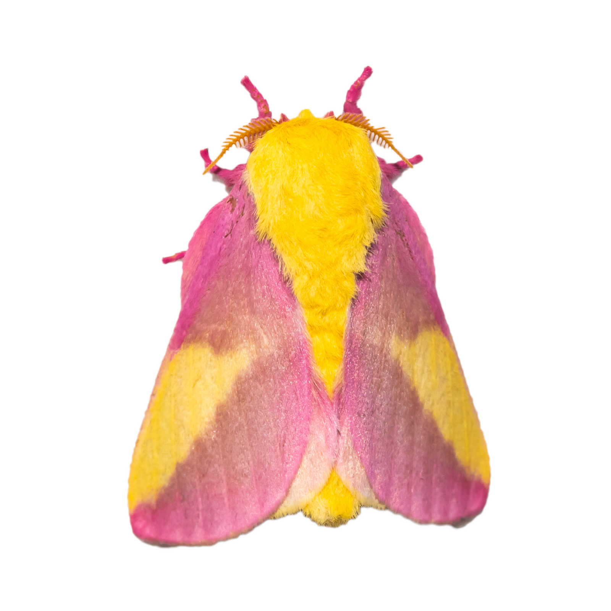
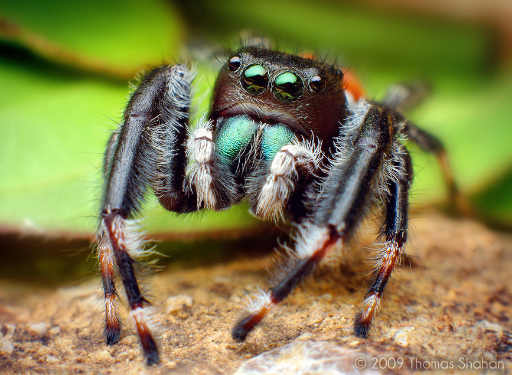
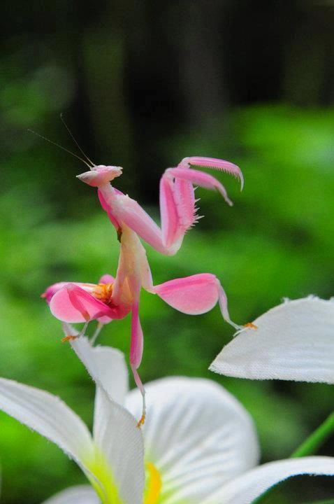
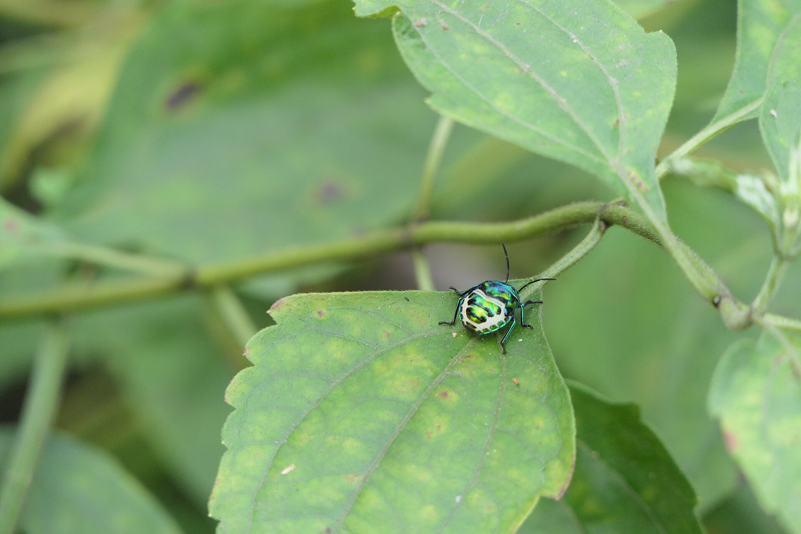
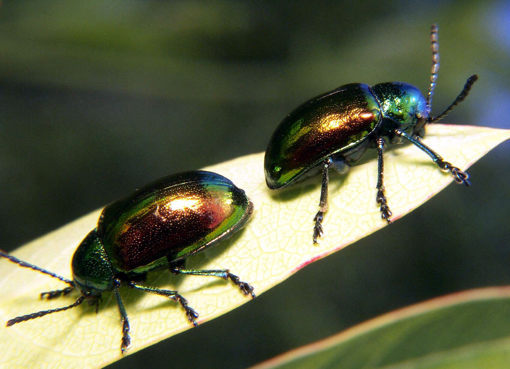
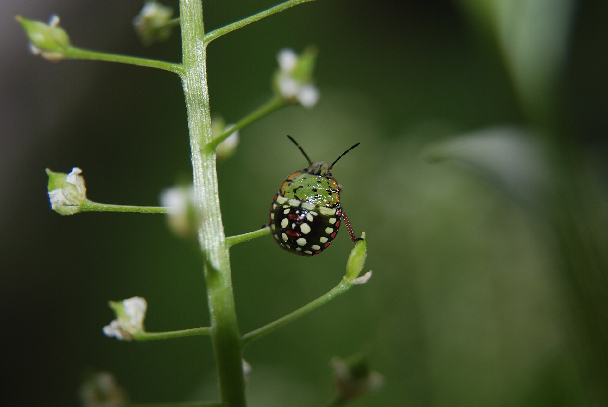

Our Editor’s Favorite Pink Bugs
Tiny, pink, and totally real. Explore our gallery of pink bugs and see just how colorful nature can get.

Small Wonders highlights the beauty of bugs and insects: dreamy, funky, mysterious, unusual, and vibrant. Often misunderstood, these tiny creatures carry strange worlds of color, pattern, movement, and secret architecture.

Tiny, pink, and totally real. Explore our gallery of pink bugs and see just how colorful nature can get.

Get field notes, bug portraits, and garden guides delivered in small, bright doses.

Jewel bugs catch the light like enamel pins left in the garden. Their shine shifts the usual bug story away from creepy and toward crafted, precious, almost ridiculous in the best possible way.

Dogbane beetles wear oil-slick green, copper, and blue while calmly eating a plant many animals avoid. Their beauty is practical armor, a glossy announcement that they are not built for anyone else’s menu.

The shield bug’s body is all geometry: a small crest, a flat back, a confident outline. Add orange, black, and pale green, and suddenly the hedge has its own tiny heraldry.